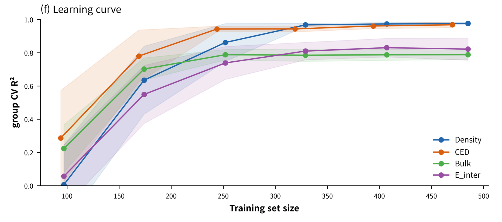
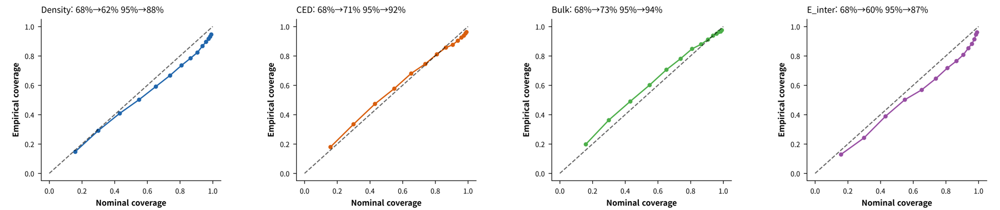

두 경로를 함께 두는 이유트리 모델 = 기준선(baseline) — 새 모델 · 피처셋은 challenger로 학습 · 기존 champion보다 holdout 성능이 높을 때만 승격
실측우리 벌크 165건으로 학습한 V7 밀도 challenger — holdout RMSE(root mean square error) 0.0078 (계획서 §9 · 1차 structural_challenger 실행)
10-3
MD 데이터 학습
10분 · MD 결과로 GNN 학습 · 검증
10-3 · MD DATASET
MD 결과 → 학습 샘플 변환 과정
입력 · 설계 단계에 아는 값만
조성(분자종별 개수) · 온도 · 분자 구조 — MD 실행 후에야 얻는 값은 제외 (9주차 누수(leakage) 원칙)
라벨 · MD 출력에서만
밀도 · CED — 후처리 CSV의 실험 ID로 입력과 결합
힘장 태그 · 필수
사전학습 5,346행은 COMPASS III · 우리 벌크 165행은 GAFF2(General AMBER Force Field 2) + AM1-BCC(Austin Model 1 – bond charge correction) — 절대값 차이 → 행마다 태그 부여
그룹 키 · 소재 단위
첨가제 소재(리그닌 · SBS · 석회 …)로 묶어 같은 소재의 학습 · 검증 동시 포함 방지
주의두 데이터의 CED는 정의와 단위가 달라 혼합 학습에서 보류 — 혼합은 밀도부터
10-3 · POOLING
두 번의 풀링으로 혼합물 표현 구성
zmol = Σv hv · zmix = Σi ci zmol,i · ŷ = MLP([ zmix , T , 조건 ])
노드 → 분자
합 · 평균 · attention 풀링 · 크기 의존 물성은 합이 유리
분자 → 혼합물
조성 비율 ci 로 가중합 — 비율 합은 1로 고정
조건 결합
온도 · 첨가제 함량은 풀링 뒤에 이어 붙여 MLP로 회귀
다중 물성 동시 학습(multi-task learning)
밀도 · CED · 점도를 한 모델의 여러 출력으로 설정 → 적은 데이터에서 물성 간 정보 공유 — 손실 가중치는 오차 규모로 정규화
라벨 스케일
점도처럼 자릿수가 넓은 물성은 log 변환 후 학습 · 보고 시 역변환
10-3 · TRAINING
학습 루프와 조정 순서
PyTorch Geometric
for epoch in range(200):
model.train()
for batch in train_loader:
pred = model(batch)
loss = F.mse_loss(pred, batch.y)
loss.backward()
opt.step(); opt.zero_grad()
val = evaluate(model, val_loader)
scheduler.step(val)
early_stop.update(val, model)
조정 순서
권장 범위
01 학습률
1e-4 ~ 3e-3
02 층 수 L
3 ~ 5
03 은닉 차원
64 ~ 256
04 배치 크기
16 ~ 128
05 정규화
dropout 0 ~ 0.2
재현성난수 시드 · 데이터 버전 · 하이퍼파라미터를 한 설정 파일로 묶어 저장 — MD의 실험 ID와 같은 역할
10-3 · VALIDATION
검증 기준 — 처음 보는 소재 · 데이터 양

학습곡선 · 트리 대리모델 group CV(그룹 교차검증) (GNN 결과 아님) · fig_reliability (f)
소재 홀드아웃
한 소재를 통째로 빼고 학습 — 처음 보는 첨가제에서 따로 평가
다중 시드
최종 학습을 시드 여러 개로 반복 → 평균 ± 표준편차
데이터 충분성
밀도 · CED는 수백 건에서 R² 0.97 전후 수렴 · bulk · E_inter는 0.8 전후 정체
힘장 혼합
밀도 holdout RMSE — GAFF2만 0.0085 · 혼합(MDML COMPASS 5,346행 + 우리 GAFF2 165건) 0.0109 · 계획서 §9 2차 스토어 학습(train_from_store) 값 → #15의 0.0078(1차 실행)과 실행 다름 · 데이터가 많다고 항상 개선되지는 않음
10-4
불확실성과 능동학습
12분 · 불확실성이 큰 영역 식별 · 다음 계산 선택
10-4 · UNCERTAINTY
두 종류의 불확실성
알레아토릭(aleatoric) · 데이터 자체의 잡음
MD 시드 간 편차에서 오는 부분 — 데이터를 더 모아도 줄지 않음
에피스테믹(epistemic) · 학습 데이터 부족에서 오는 불확실성
학습 데이터가 없는 영역에서 증가 — 계산 추가 시 감소 · 능동학습의 표적
딥 앙상블(deep ensemble)
시드만 바꿔 5개 학습 · 예측 평균과 분산 · 가장 안정적
MC(Monte Carlo) dropout
추론 시 dropout을 켠 채 여러 번 예측 · 비용 낮음
이분산 회귀 · heteroscedastic
모델이 평균과 분산을 함께 출력 · 알레아토릭 항을 직접 학습
보정 확인"68% 구간 안의 실제 포함 비율 = 68%" 여부를 검증 폴드로 확인 — 어긋나면 온도 스케일링(temperature scaling)으로 보정
10-4 흐름능동학습으로 줄일 수 있는 불확실성 = 에피스테믹 — 다음 장: 그 σ의 실제 적중 여부부터 확인
10-4 · CALIBRATION
보정 곡선(calibration curve)으로 예측 구간 적중 여부 확인

Density약간 과신
68% → 62%
95% → 88%
CED양호
68% → 71%
95% → 92%
Bulk양호
68% → 73%
95% → 94%
E_inter과신
68% → 60%
95% → 87%
읽는 법곡선이 대각선 아래 = 구간이 좁음 — 과신(over-confidence) · 획득함수가 이 σ를 그대로 사용 → 보정 우선 확인